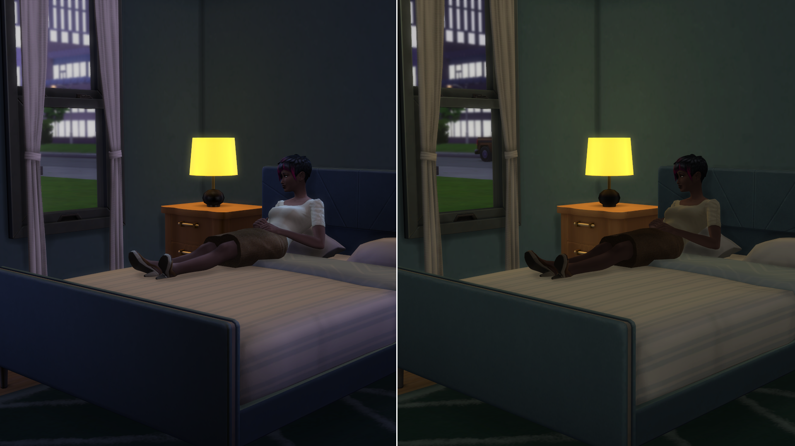

Out Of The Dark
基礎照明修復
00000000000

00000000000

僅擇一下載
Merged (合併檔 )
⤷ 鴨呀整過的懶人包版本
Separate (分開檔 )
⤷ 自行客製化挑選髮型
其他附加檔案 (建議全部下載 )
Better Looking Npc_ADDON_LessBeards.package
⤷ 更少機率生成鬍子，但仍保留部分好看的EA鬍渣
Better Looking Npc_ADDON_NoArmHair.package
⤷ NPC無生成手毛
Better Looking Npc_ADDON_NoChestBackHair.package
⤷ NPC無生成胸/背毛
Better Looking Npc_ADDON_NoLegHair.package
⤷ NPC無生成腳毛